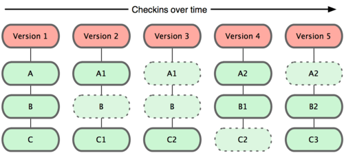
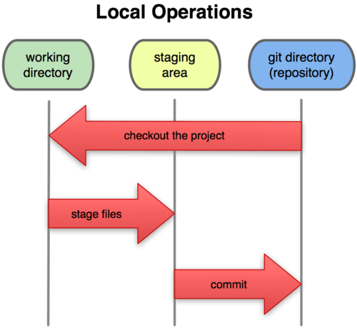

GIT
VERSİYON KONTROL SİSTEMİ
- Giriş -
İÇİNDEKİLER
- Git Nasıl Çalışır?
- Dosya Aşamaları
- İlk Kurulum Ayarları
- Depo Oluşturmak
- Dallanma Yönetimi
GIT NASIL ÇALIŞIR?
Git farkları değil bellek kopyalarını tutar.
Diğer sistemler veriyi her bir dosyanın ilk sürümü üzerinde yapılan değişiklikler olarak depolama eğilimindedir.

Git veriyi projenin zaman içindeki bellek kopyaları olarak depolar.
DOSYA AŞAMALARI YAŞAM DÖNGÜSÜ

DOSYA AŞAMALARI (STATE)
Git'te, dosyalarınızın içinde bulunabileceği üç aşama vardır:
- Kaydedilmiş
- Değiştirilmiş
- Hazırlanmış
Üç aşama üç ana bölüme işaret eder: Git klasörü, çalışma klasörü ve hazırlık alanı.
GIT KLASÖRÜ
Git'in üstverileri (metadata) ve nesne veritabanını depoladığı yerdir.
ÇALIŞMA KLASÖRÜ
Projenin bir sürümünden yapılan tek bir seçmedir.
HAZIRLIK ALANI (STAGING AREA)
Genellikle Git klasörünüzde bulunan ve bir sonraki kayıt işlemine hangi değişikliklerin dahil olacağını tutan sade bir dosyadır.
Git işleyişi temelde şöyledir:
- Çalışma klasörünüzdeki dosyalar üzerinde değişiklik yaparsınız.
- Dosyaları bellek kopyalarını hazırlık alanına ekleyerek hazırlarsınız.
- Dosyaların hazırlık alanındaki hallerini alıp oradaki bellek kopyasını kalıcı olarak Git klasörüne depolayan bir kayıt işlemi yaparsınız.